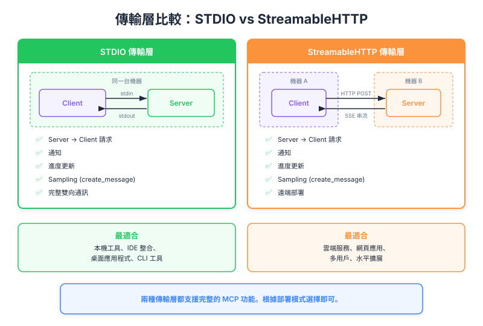

| Item | Detail |
|---|---|
| Exam Domain | D2 — Tool Design & MCP Integration (18%) |
| Task Statements | 2.1 (MCP transport 選擇), 2.3 (server 生命週期管理) |
| Source | model-context-protocol-advanced-topics / 03-transports / Lesson 11 |
Stdio transport 將 MCP server 作為本地 subprocess 執行，透過 stdin/stdout 進行完全雙向的 JSON-RPC 訊息交換，並使用三步 handshake 建立連線。

Transport 是 JSON-RPC 訊息在 MCP client 和 server 之間流動的 通訊通道。Protocol 定義訊息格式，transport 定義訊息如何物理傳輸。
Stdio 是 MCP 規範中最簡單且功能最完整的 transport。
Client 將 server 作為 child process（subprocess）啟動。啟動後：
┌────────┐ stdin ┌────────┐
│ Client │ ─────────→ │ Server │
│ │ ←───────── │ │
└────────┘ stdout └────────┘
（同一台機器，subprocess）
💡 Key Insight
Stdio 只能在 client 和 server 位於同一台機器時運作。Client 必須能直接 spawn server process。這是硬性限制 — 無法遠端託管。
在任何 tool call 或 resource read 之前，client 和 server 需要協商 capabilities：
| 步驟 | 方向 | 訊息類型 | 用途 |
|---|---|---|---|
| 1 | Client → Server | Initialize Request | Client 宣告 protocol 版本 + capabilities |
| 2 | Server → Client | Initialize Result | Server 回應其 capabilities |
| 3 | Client → Server | Initialized Notification | Client 確認 — handshake 完成 |
步驟 3 之後，連線正式建立，雙方可自由交換訊息。
# Handshake 概念流程
client.send({"jsonrpc": "2.0", "method": "initialize", "params": {...}})
response = server.receive() # Initialize Result
client.send({"jsonrpc": "2.0", "method": "notifications/initialized"})
# 現在可以開始 tool call
初始化完成後，Stdio 支援所有四種 MCP 通訊模式：
| 模式 | 方向 | 範例 |
|---|---|---|
| Client → Server Request | Client 向 server 發起請求 | tools/call、resources/read |
| Server → Client Response | Server 回應 | Tool 結果、resource 內容 |
| Server → Client Request | Server 向 client 發起請求 | sampling/createMessage、roots/list |
| Client → Server Response | Client 回應 | Sampling 結果、root 清單 |
這是完整的雙向 MCP — 沒有任何功能限制。
💡 Key Insight
Stdio 是唯一原生支援所有四種模式的 transport，不需要任何 workaround。這使其成為 MCP 能力的基準參考。
| 使用場景 | 適合度 |
|---|---|
| 本地開發與測試 | 極佳 |
| IDE 整合（VS Code、Claude Code） | 極佳 |
| CI/CD pipeline | 良好 |
| Production 遠端 server | 不可能 |
| 多使用者存取 | 不可能 |
| Front | Back |
|---|---|
| MCP 中的 transport 是什麼？ | Client 與 server 之間 JSON-RPC 訊息交換的通訊通道 |
| Stdio transport 如何物理連接 client 和 server？ | Client 將 server 作為 subprocess spawn；訊息透過 stdin（client→server）和 stdout（server→client）傳輸 |
| 三步 handshake 的順序是？ | 1) Initialize Request (client→server) 2) Initialize Result (server→client) 3) Initialized Notification (client→server) |
| Stdio transport 能跨機器運作嗎？ | 不能 — client 必須在同一台機器上將 server 作為本地 subprocess spawn |
| Stdio 支援幾種通訊模式？ | 四種：client→server request、server→client response、server→client request、client→server response |
| 為什麼 Stdio 被稱為「基準」transport？ | 因為它支援完整的雙向 MCP，沒有任何功能限制 |
| 什麼時候不應該選 Stdio？ | 需要遠端託管、水平擴展或多使用者存取時 |
| Initialized Notification 發送後會發生什麼？ | 連線正式建立 — 雙方可以自由交換訊息 |